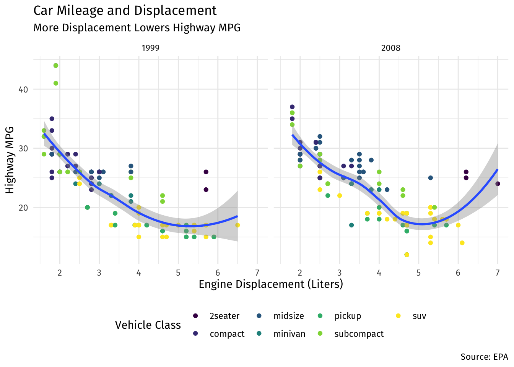
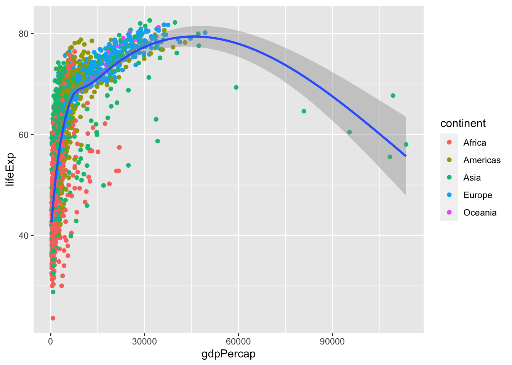

library("ggplot2") # for data visualization
library("gapminder") # for dataset1.3 — Data Visualization
(Answer Key)
Required Packages
First, install the following two packages with the command install.packages("ggplot2") and install.packages("gapminder") in the console below.1 Alternatively, you will probably already get a yellow banner at the top of this file indicating you need to install the packages, and can install them by clicking Install. Don’t install any package in an R chunk in this document, since it needs to be installed into R Studio.
Then, load the package by running (clicking the green play button) the chunk below:
Our Plot from Class
Next, run the code from the slides where I made our first plot.
ggplot(data = mpg)+ # set data source to mpg (included in ggplot2)
aes(x = displ, # x is displacement
y = hwy)+ # y is hwy mpg
geom_point(aes(color = class))+ # color points by car class
geom_smooth()+ # add regression line
facet_wrap(~year)+ # separate plots by year
labs(x = "Engine Displacement (Liters)",
y = "Highway MPG",
title = "Car Mileage and Displacement",
subtitle = "More Displacement Lowers Highway MPG",
caption = "Source: EPA",
color = "Vehicle Class")+
scale_color_viridis_d()+ # change color scale
theme_minimal()+ # change theme
theme(legend.position = "bottom", # move legend
text = element_text(family = "Fira Sans")) # change font`geom_smooth()` using method = 'loess' and formula 'y ~ x'
Exploring the Gapminder Dataset
Question 1
We will look at GDP per Capita and Life Expectancy using some data from the gapminder project. There is a handy package called gapminder that uses a small snippet of this data for exploratory analysis. Install and load the package gapminder. Type ?gapminder and hit enter to see a description of the data.
# type your code below in this chunk
?gapminderQuestion 2
Let’s get a quick look at gapminder to see what we’re dealing with.
Part A
Get the structure of the gapminder data.
# type your code below in this chunk
str(gapminder)tibble [1,704 × 6] (S3: tbl_df/tbl/data.frame)
$ country : Factor w/ 142 levels "Afghanistan",..: 1 1 1 1 1 1 1 1 1 1 ...
$ continent: Factor w/ 5 levels "Africa","Americas",..: 3 3 3 3 3 3 3 3 3 3 ...
$ year : int [1:1704] 1952 1957 1962 1967 1972 1977 1982 1987 1992 1997 ...
$ lifeExp : num [1:1704] 28.8 30.3 32 34 36.1 ...
$ pop : int [1:1704] 8425333 9240934 10267083 11537966 13079460 14880372 12881816 13867957 16317921 22227415 ...
$ gdpPercap: num [1:1704] 779 821 853 836 740 ...Part B
What variables are there?
country: a factorcontinent: a factoryear: an integerlifeExp: a numbergdpPercap: a number
Part C
Look at the head() of the dataset to get a sense of what the data looks like.
# type your code below in this chunk
head(gapminder)# A tibble: 6 × 6
country continent year lifeExp pop gdpPercap
<fct> <fct> <int> <dbl> <int> <dbl>
1 Afghanistan Asia 1952 28.8 8425333 779.
2 Afghanistan Asia 1957 30.3 9240934 821.
3 Afghanistan Asia 1962 32.0 10267083 853.
4 Afghanistan Asia 1967 34.0 11537966 836.
5 Afghanistan Asia 1972 36.1 13079460 740.
6 Afghanistan Asia 1977 38.4 14880372 786.Part D
Get a summary() of all the variables.
summary(gapminder) country continent year lifeExp
Afghanistan: 12 Africa :624 Min. :1952 Min. :23.60
Albania : 12 Americas:300 1st Qu.:1966 1st Qu.:48.20
Algeria : 12 Asia :396 Median :1980 Median :60.71
Angola : 12 Europe :360 Mean :1980 Mean :59.47
Argentina : 12 Oceania : 24 3rd Qu.:1993 3rd Qu.:70.85
Australia : 12 Max. :2007 Max. :82.60
(Other) :1632
pop gdpPercap
Min. :6.001e+04 Min. : 241.2
1st Qu.:2.794e+06 1st Qu.: 1202.1
Median :7.024e+06 Median : 3531.8
Mean :2.960e+07 Mean : 7215.3
3rd Qu.:1.959e+07 3rd Qu.: 9325.5
Max. :1.319e+09 Max. :113523.1
Plotting with ggplot
Question 3
Let’s first make a bar graph to see how many countries are in each continent. The only aesthetic you need is to map continent to x. Bar graphs are great for representing categories, but not quantitative data.
# type your code below in this chunk
ggplot(data = gapminder) +
aes(x = continent) +
geom_bar()
Question 4
For quantitative data, we want a histogram to visualize the distribution of a variable. Make a histogram of gdpPercap. Your only aesthetic here is to map gdpPercap to x.
# type your code below in this chunk
ggplot(data = gapminder) +
aes(x = gdpPercap) +
geom_histogram()`stat_bin()` using `bins = 30`. Pick better value with `binwidth`.
Question 5
Now let’s try adding some color, specifically, add an aesthetic that maps continent to fill. (In general, color refers to the borders of a geom (except points), fill is the interior of an object.)
# type your code below in this chunk
ggplot(data = gapminder) +
aes(x = gdpPercap,
fill = continent) +
geom_histogram()`stat_bin()` using `bins = 30`. Pick better value with `binwidth`.Question 6
Instead of a histogram, change the geom to make it a density graph. To avoid overplotting, add alpha=0.4 to the geom argument (alpha changes the transparency of a fill).
# type your code below in this chunk
ggplot(data = gapminder) +
aes(x = gdpPercap,
fill = continent) +
geom_density(alpha = 0.4)Question 7
Redo your plot from Question 5 for lifeExp instead of gdpPercap.
# type your code below in this chunk
ggplot(data = gapminder) +
aes(x = lifeExp,
fill = continent) +
geom_histogram()`stat_bin()` using `bins = 30`. Pick better value with `binwidth`.
Question 8
Now let’s try a scatterplot for lifeExp (as y) on gdpPercap (as x). You’ll need both for aesthetics. The geom here is geom_point().
# type your code below in this chunk
ggplot(data = gapminder) +
aes(x = gdpPercap,
y = lifeExp) +
geom_point()
Question 9
Add some color by mapping continent to color in your aesthetics.
# type your code below in this chunk
ggplot(data = gapminder) +
aes(x = gdpPercap,
y = lifeExp,
color = continent) +
geom_point()
Question 10
Now let’s try adding a regression line with geom_smooth(). Add this layer on top of your geom_point() layer.
# type your code below in this chunk
ggplot(data = gapminder) +
aes(x = gdpPercap,
y = lifeExp,
color = continent) +
geom_point() +
geom_smooth()`geom_smooth()` using method = 'loess' and formula 'y ~ x'
Question 11
Did you notice that you got multiple regression lines (colored by continent) in the last question? That’s because we set a global aesthetic of mapping continent to color. If we want just one regression line, we need to instead move the color = continent inside the aes of geom_point. Try this instead. This will only map continent to color for points, not for anything else.
# type your code below in this chunk
ggplot(data = gapminder) +
aes(x = gdpPercap,
y = lifeExp) +
geom_point(aes(color = continent)) +
geom_smooth()`geom_smooth()` using method = 'gam' and formula 'y ~ s(x, bs = "cs")'
Question 12
Now add an aesthetic to your points to map pop to size.
# type your code below in this chunk
ggplot(data = gapminder) +
aes(x = gdpPercap,
y = lifeExp) +
geom_point(aes(color = continent,
size = pop)) +
geom_smooth()`geom_smooth()` using method = 'gam' and formula 'y ~ s(x, bs = "cs")'Question 13
Change the color of the regression line to "black". Try first by putting this inside an aes() in your geom_smooth, and try a second time by just putting it inside geom_smooth without an aes(). What’s the difference, and why?
# type your code below in this chunk
ggplot(data = gapminder) +
aes(x = gdpPercap,
y = lifeExp) +
geom_point(aes(color = continent,
size = pop)) +
geom_smooth(aes(color = "black"))`geom_smooth()` using method = 'gam' and formula 'y ~ s(x, bs = "cs")'
# putting it inside aesthetics tries to map color to something
# in the data called "black", since R can't find "black",
# it will produce some random color
# putting it *outside* aesthetics (correctly) sets color to black
ggplot(data = gapminder) +
aes(x = gdpPercap,
y = lifeExp) +
geom_point(aes(color = continent,
size = pop)) +
geom_smooth(color = "black")`geom_smooth()` using method = 'gam' and formula 'y ~ s(x, bs = "cs")'Question 14
Another way to separate out continents is with faceting. Add +facet_wrap(~continent) to create subplots by continent.
# type your code below in this chunk
ggplot(data = gapminder) +
aes(x = gdpPercap,
y = lifeExp) +
geom_point(aes(color = continent,
size = pop)) +
geom_smooth(color = "black") +
facet_wrap(~continent)`geom_smooth()` using method = 'loess' and formula 'y ~ x'Question 15
Remove the facet layer. The scale is quite annoying for the x-axis, a lot of points are clustered on the lower level. Let’s try changing the scale by adding a layer: +scale_x_log10().
# type your code below in this chunk
ggplot(data = gapminder) +
aes(x = gdpPercap,
y = lifeExp) +
geom_point(aes(color = continent,
size = pop)) +
geom_smooth(color = "black") +
scale_x_log10()`geom_smooth()` using method = 'gam' and formula 'y ~ s(x, bs = "cs")'
Question 16
Now let’s fix the labels by adding +labs(). Inside labs, make proper axes titles for x, y, and a title to the plot. If you want to change the name of the legends (continent color), add one for color and size.
# type your code below in this chunk
ggplot(data = gapminder) +
aes(x = gdpPercap,
y = lifeExp) +
geom_point(aes(color = continent,
size = pop)) +
geom_smooth(color = "black") +
scale_x_log10()+
labs(x = "GDP per Capita",
y = "Life Expectancy",
color = "Continent",
size = "Population")`geom_smooth()` using method = 'gam' and formula 'y ~ s(x, bs = "cs")'Footnotes
Note that you can install multiple packages at the same time by combining the package names into a vector, like so:
install.packages(c("ggplot2", "gapminder")).↩︎